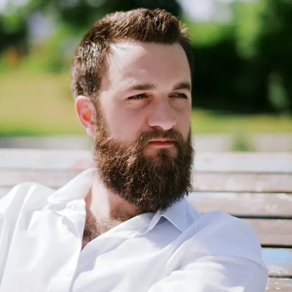

← Natrag na sezonu 2026./2027.

David Oštrek
bas-bariton, k.g.
David Oštrek bas-bariton je iz Donjeg Makojišća kraj Novog Marofa. Glazbeno obrazovanje započeo je u Novom Marofu, a srednju je školu završio u Varaždinu; pjevanje je studirao na Universität für Musik und darstellende Kunst u Beču.
Godine 2010. debitirao je u HNK u Varaždinu kao Enej u Purcellovoj operi „Didona i Enej“. Od 2015. bio je član Međunarodnog opernog studija Državne opere Unter den Linden u Berlinu, a od sezone 2018./2019. stalni je član njezina ansambla.
Osnivač je i umjetnički voditelj Hrvatske operne akademije, pokrenute 2021.
Nastup s VKO-om
- 13. prosinca 2026. — Operni gala koncert